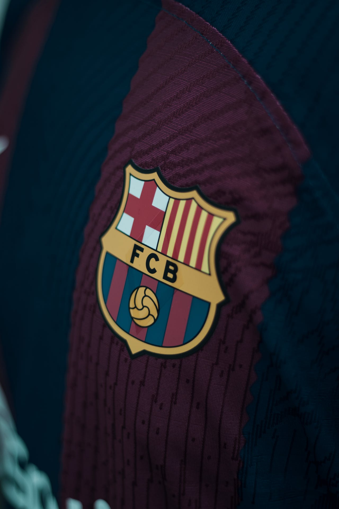

El Fútbol Club Barcelona (en catalán: Futbol Club Barcelona), conocido popularmente como Barça,n. es una entidad polideportiva con sede en Barcelona, Cataluña, España. Fue fundado como club de fútbol el 29 de noviembre de 1899 y registrado oficialmente el 5 de enero de 1903
Tanto el club como sus hinchas reciben el apelativo de culers (pronunciado culés), y también, en referencia a sus colores
Pagina oficial FC Barcelona: https://www.fcbarcelona.es/es/noticias/827967/mes-que-un-clubPatrocinadores de este club:
- -Nike
- -spotify
- -Ambilight tv

-
Deportes en los que participa este club: